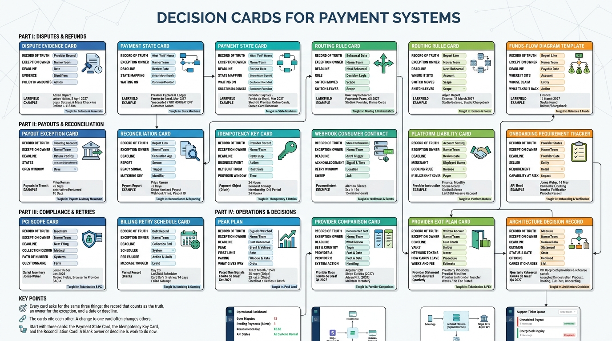

Reference
Toolkit: Cards and Templates for Payment Architecture Decisions
AI-assisted: researched and written with Claude Code; illustrations generated with Gemini. How this works

Image generated by Google Gemini (gemini-3-pro-image-preview)